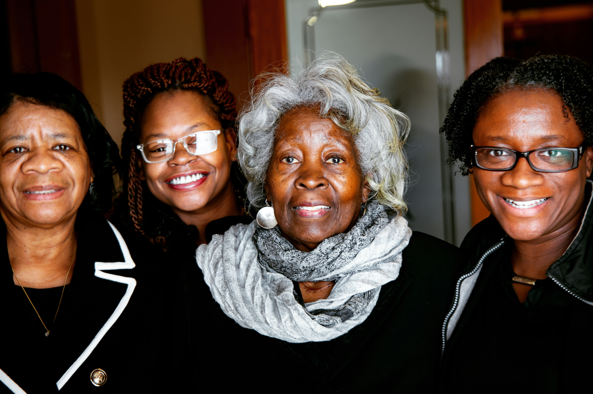

Explore how DNA-repair proteins help protect cells.
Genetic risk is not the same as a diagnosis. Understanding mechanisms can support informed conversations about health.
START HERE · YOUR HEALTH JOURNEY
Your family history may hold important clues about your health.
Some inherited pathogenic variants increase the likelihood of developing breast cancer. Learning about genetic risk can inform conversations about screening, genetic counseling, and options for reducing risk. Increased risk does not mean cancer is inevitable.
What you'll learn: how this condition affects the body, practical next steps, and questions to bring to a healthcare visit.

02 · THE SCIENCE
What’s happening in my body?
Explore the interactive pathway below. Select each step to see how the biology works.
HEREDITARY BREAST CANCER
Hereditary breast cancer: When a DNA-repair safety system is weakened
BRCA1, BRCA2, and PALB2 normally help protect our cells by supporting DNA repair. Certain harmful changes in these genes can weaken that protection and increase the risk of developing breast cancer.
How cells repair a serious DNA break
BRCA1, PALB2, and BRCA2 work together in a repair pathway called homologous recombination. The illustration shows their roles in repairing a DNA double-strand break.
Conceptual illustration, not to scale. Homologous recombination uses a matching DNA sequence as a template; many other proteins also participate in this process.
New to these terms?
DNA damage response: The cell’s safety system that detects DNA damage, coordinates repairs, and can pause cell division when needed.
Tumor-suppressor genes: Genes that help protect against uncontrolled cell growth. Some, including BRCA1 and BRCA2, support DNA repair.
Homologous recombination repair: A precise way cells repair certain serious DNA breaks using a matching DNA sequence as a guide.
These protections help cells maintain healthy DNA. A harmful inherited variant can weaken some of them, but it does not mean cancer will definitely develop.
BRCA1
BRCA1 protein
Part of tumor-suppressor and DNA-damage-response pathways. It helps coordinate repair of damaged DNA.
PALB2
PALB2 protein
“Partner and localizer of BRCA2.” It interacts with BRCA1 and BRCA2 in homologous-recombination repair.
BRCA2
BRCA2 protein
Supports accurate repair of DNA double-strand breaks through homologous recombination.
Other genes associated with inherited breast cancer risk include ATM, CHEK2, TP53, and PTEN. Certain changes in these genes can increase cancer risk, but the level of risk and the types of cancer involved can differ depending on the gene and the specific change.
INHERITED
One copy has a pathogenic variant
A person may be born with one altered copy and one functional copy of a tumor-suppressor gene.
→
IN A CELL
The remaining functional copy can be lost or altered
A later somatic change can reduce the cell's remaining protective function.
→
RESULT
DNA repair becomes less effective
Genomic damage can accumulate, increasing the chance that a cell acquires changes that support cancer development.
Important: inheriting a pathogenic BRCA1, BRCA2 or PALB2 variant increases susceptibility. It does not mean cancer is inevitable.
The information can matter across generations
Grandmother variant
→
Mother variant
→
Daughter may inherit it
BRCA1-, BRCA2- and PALB2-associated cancer susceptibility is inherited in an autosomal dominant pattern. A pathogenic variant can come from either biological parent.
A positive result is about risk, not certainty. Genetic information can help guide screening, prevention discussions, treatment decisions in some cancers, and testing conversations for relatives.
DNA repair is one of the body's safety systems
DNA can become damaged during normal cell activity. Cells have protective systems that help:
Detect DNA damage.
Repair damaged DNA.
Control cell division so cells do not multiply unchecked.
Stop severely damaged cells from continuing to multiply.
Some genes linked to hereditary cancer risk help these systems work properly.
BRCA1 and BRCA2: part of the repair team
Everyone has BRCA1 and BRCA2 genes. These genes normally help repair certain kinds of DNA damage. The concern is inheriting a pathogenic variant that interferes with their function, not simply “having a BRCA gene.”
A person who inherits one altered copy may have increased cancer susceptibility. Additional changes acquired in individual cells over time can contribute to loss of protective function and, in some circumstances, tumor development.
Genetic risk is not a cancer diagnosis. A pathogenic variant can increase the probability of certain cancers, but does not mean cancer is present or inevitable.
How does cancer risk differ between genes?
Harmful changes in BRCA1, BRCA2, or PALB2 can significantly increase the chance of developing breast cancer. Changes in other genes may increase risk by a smaller amount or be linked to particular types of cancer. The level of risk depends on the gene and the specific change, so a genetic counselor or healthcare professional can help explain what a result means for you.
What does a negative result mean?
A negative test may not erase a concerning family history, especially if no affected relative has been tested or the familial cause is unknown. A variant of uncertain significance (VUS) should not be treated as a confirmed disease-causing result.
WHY THIS MATTERS FOR BLACK WOMEN
Representation changes what we know and who benefits.
Breast cancer genetics
Black women have historically been underrepresented in genetic research and have experienced disparities in access to cancer genetic services. That can affect who gets offered testing and how confidently some variants can be interpreted. A VUS is not a diagnosis and should not be treated as a pathogenic result.
EquiGen’s message: ancestry and identity are part of a person’s health context, but race itself is not a gene. Equitable genetics means better representation, access, interpretation, education and follow-through.
RECOGNIZE THE CLUES
What signs should I know?
Inherited breast cancer risk does not itself cause symptoms. Someone can carry a cancer-associated genetic variant and feel completely healthy. Reasons to ask your doctor about a hereditary risk assessment include:
Breast cancer diagnosed at a younger age, multiple relatives with breast cancer, or more than one breast cancer in the same person.
Ovarian cancer, male breast cancer, or certain pancreatic or prostate cancers in the family.
A known inherited cancer-associated genetic variant in a biological relative.
Changes that need medical evaluation include a new breast or underarm lump, nipple discharge (especially bloody discharge), a new nipple change, or persistent changes in breast skin or shape. These changes have many possible causes and do not necessarily mean cancer or an inherited condition.
Many breast cancers cause no early symptoms. Do not wait for symptoms to discuss screening or family-history concerns with your doctor.
03 · TURN KNOWLEDGE INTO ACTION
What can I do today?
These are starting points for an informed conversation, not a personal diagnosis or treatment plan.
STEP 01
Build a three-generation cancer family history
Ask about parents, siblings, children, grandparents, aunts and uncles, nieces and nephews, and cousins. Record the type of cancer, age at diagnosis, and maternal or paternal side. “Maternal aunt: breast cancer at 42” is more useful than “cancer runs in my family.”
STEP 02
Recognize patterns worth discussing
Tell your doctor about several relatives with breast cancer, diagnosis before age 50, ovarian cancer, male breast cancer, cancer in both breasts, breast and ovarian cancer in one person, certain triple-negative breast cancers, or a known familial pathogenic BRCA variant.
STEP 03
Include your father’s family
Hereditary cancer susceptibility can be inherited from either biological parent. Paternal family history counts.
STEP 04
Ask about genetic counseling
A genetic counselor can review family history, discuss test benefits and limitations, and help decide who should be tested first and which testing approach is appropriate.
STEP 05
Consider testing an affected relative first
When feasible, testing a family member who has had a relevant cancer is often most informative when no familial pathogenic variant is already known.
STEP 06
Understand consumer-test limitations
Some direct-to-consumer tests check only a subset of BRCA variants and may miss other relevant variants or genes. A negative consumer result is not the same as a comprehensive clinical evaluation.
04 · ADVOCATE FOR YOUR HEALTH
Questions to ask my doctor
Choose the questions most relevant to you, then copy your list for your next appointment.
![EquiGen Health Foundation DNA letter E logo]()